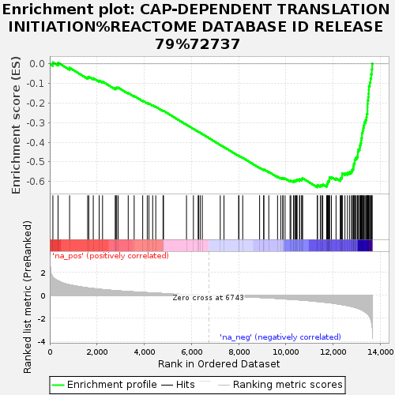
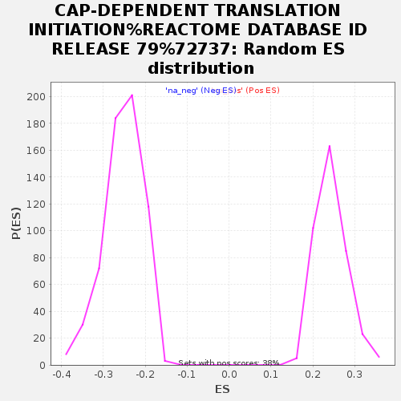

| | | Dataset | GSEA_GSE185657 |
| Phenotype | NoPhenotypeAvailable |
| Upregulated in class | na_neg |
| GeneSet | CAP-DEPENDENT TRANSLATION INITIATION%REACTOME DATABASE ID RELEASE 79%72737 |
| Enrichment Score (ES) | -0.63022697 |
| Normalized Enrichment Score (NES) | -2.4861493 |
| Nominal p-value | 0.0 |
| FDR q-value | 0.0 |
| FWER p-Value | 0.0 |
Table: GSEA Results Summary

Fig 1: Enrichment plot: CAP-DEPENDENT TRANSLATION INITIATION%REACTOME DATABASE ID RELEASE 79%72737
Profile of the Running ES Score & Positions of GeneSet Members on the Rank Ordered List
| SYMBOL | RANK IN GENE LIST | RANK METRIC SCORE | RUNNING ES | CORE ENRICHMENT | | 1 | RPL10A | 132 | 1.573 | 0.0077 | No |
| 2 | EIF4H | 351 | 1.265 | 0.0057 | No |
| 3 | RPL39L | 840 | 0.913 | -0.0201 | No |
| 4 | RPL12 | 1605 | 0.644 | -0.0693 | No |
| 5 | EIF4A1 | 1652 | 0.633 | -0.0657 | No |
| 6 | RPS8 | 1843 | 0.590 | -0.0731 | No |
| 7 | EIF2S1 | 2093 | 0.533 | -0.0856 | No |
| 8 | RPL27 | 2236 | 0.500 | -0.0905 | No |
| 9 | RPS25 | 2773 | 0.408 | -0.1255 | No |
| 10 | RPL8 | 2804 | 0.403 | -0.1232 | No |
| 11 | EIF5B | 2836 | 0.397 | -0.1211 | No |
| 12 | RPS11 | 2900 | 0.387 | -0.1215 | No |
| 13 | RPL23 | 3323 | 0.329 | -0.1489 | No |
| 14 | EIF2S3 | 3575 | 0.295 | -0.1642 | No |
| 15 | EIF4E | 3937 | 0.250 | -0.1880 | No |
| 16 | RPL5 | 4130 | 0.230 | -0.1996 | No |
| 17 | RPL4 | 4202 | 0.224 | -0.2024 | No |
| 18 | EIF3D | 4359 | 0.205 | -0.2116 | No |
| 19 | EIF3B | 4490 | 0.191 | -0.2191 | No |
| 20 | EIF1AX | 4799 | 0.156 | -0.2400 | No |
| 21 | UBA52 | 4818 | 0.154 | -0.2397 | No |
| 22 | RPS24 | 5792 | 0.068 | -0.3107 | No |
| 23 | EIF2S2 | 6085 | 0.046 | -0.3317 | No |
| 24 | RPL38 | 6287 | 0.028 | -0.3462 | No |
| 25 | EIF2B5 | 6304 | 0.027 | -0.3471 | No |
| 26 | RPS6 | 6372 | 0.019 | -0.3518 | No |
| 27 | EIF4G1 | 6461 | 0.013 | -0.3582 | No |
| 28 | EIF3A | 7222 | -0.040 | -0.4138 | No |
| 29 | EIF3M | 7380 | -0.051 | -0.4248 | No |
| 30 | EIF4B | 8002 | -0.102 | -0.4695 | No |
| 31 | RPS16 | 8012 | -0.102 | -0.4690 | No |
| 32 | RPS10 | 8174 | -0.116 | -0.4796 | No |
| 33 | RPL35A | 8889 | -0.186 | -0.5302 | No |
| 34 | RPL41 | 9062 | -0.203 | -0.5406 | No |
| 35 | RPS3 | 9069 | -0.204 | -0.5388 | No |
| 36 | EIF2B3 | 9278 | -0.226 | -0.5516 | No |
| 37 | EIF5 | 9649 | -0.271 | -0.5759 | No |
| 38 | RPL35 | 9784 | -0.291 | -0.5825 | No |
| 39 | EIF3I | 9874 | -0.304 | -0.5857 | No |
| 40 | RPL27A | 9878 | -0.304 | -0.5826 | No |
| 41 | RPL13 | 9968 | -0.314 | -0.5856 | No |
| 42 | EIF4EBP1 | 10178 | -0.341 | -0.5973 | No |
| 43 | RPL34 | 10212 | -0.346 | -0.5959 | No |
| 44 | RPL13A | 10327 | -0.362 | -0.6002 | No |
| 45 | EIF3J | 10339 | -0.363 | -0.5970 | No |
| 46 | RPL22 | 10401 | -0.372 | -0.5974 | No |
| 47 | EIF3C | 10426 | -0.375 | -0.5950 | No |
| 48 | RPL24 | 10463 | -0.380 | -0.5934 | No |
| 49 | RPL22L1 | 10476 | -0.383 | -0.5901 | No |
| 50 | EIF3F | 10583 | -0.400 | -0.5934 | No |
| 51 | RPS27 | 10586 | -0.401 | -0.5891 | No |
| 52 | RPL26L1 | 10671 | -0.416 | -0.5907 | No |
| 53 | RPS2 | 10678 | -0.417 | -0.5865 | No |
| 54 | RPL7A | 10712 | -0.420 | -0.5843 | No |
| 55 | RPS7 | 11336 | -0.537 | -0.6243 | Yes |
| 56 | RPS21 | 11338 | -0.538 | -0.6184 | Yes |
| 57 | RPL36AL | 11460 | -0.560 | -0.6211 | Yes |
| 58 | EIF4A2 | 11518 | -0.574 | -0.6189 | Yes |
| 59 | RPS23 | 11565 | -0.583 | -0.6158 | Yes |
| 60 | RPS20 | 11729 | -0.618 | -0.6210 | Yes |
| 61 | EIF2B1 | 11747 | -0.623 | -0.6153 | Yes |
| 62 | RPL10 | 11766 | -0.628 | -0.6096 | Yes |
| 63 | RPL6 | 11782 | -0.630 | -0.6038 | Yes |
| 64 | EIF3K | 11801 | -0.634 | -0.5980 | Yes |
| 65 | RPS12 | 11844 | -0.643 | -0.5940 | Yes |
| 66 | RPSA | 11845 | -0.643 | -0.5868 | Yes |
| 67 | EIF2B2 | 11849 | -0.644 | -0.5799 | Yes |
| 68 | RPL18A | 11931 | -0.667 | -0.5785 | Yes |
| 69 | RPL32 | 12127 | -0.726 | -0.5848 | Yes |
| 70 | RPLP2 | 12305 | -0.778 | -0.5892 | Yes |
| 71 | RPL3 | 12333 | -0.792 | -0.5824 | Yes |
| 72 | RPL30 | 12378 | -0.810 | -0.5766 | Yes |
| 73 | RPL23A | 12382 | -0.811 | -0.5679 | Yes |
| 74 | RPS28 | 12386 | -0.813 | -0.5590 | Yes |
| 75 | EIF3G | 12504 | -0.854 | -0.5582 | Yes |
| 76 | RPL28 | 12612 | -0.895 | -0.5561 | Yes |
| 77 | RPL17 | 12705 | -0.933 | -0.5525 | Yes |
| 78 | RPL37A | 12784 | -0.972 | -0.5475 | Yes |
| 79 | EIF3H | 12814 | -0.986 | -0.5387 | Yes |
| 80 | RPS14 | 12858 | -1.008 | -0.5307 | Yes |
| 81 | RPL15 | 12868 | -1.015 | -0.5201 | Yes |
| 82 | RPL36A | 12878 | -1.022 | -0.5094 | Yes |
| 83 | RPS4Y1 | 12918 | -1.043 | -0.5006 | Yes |
| 84 | PABPC1 | 12920 | -1.043 | -0.4891 | Yes |
| 85 | RPS17 | 12960 | -1.069 | -0.4801 | Yes |
| 86 | RPL29 | 13022 | -1.116 | -0.4722 | Yes |
| 87 | RPLP0 | 13050 | -1.136 | -0.4616 | Yes |
| 88 | EIF3L | 13052 | -1.136 | -0.4491 | Yes |
| 89 | EIF3E | 13068 | -1.143 | -0.4375 | Yes |
| 90 | RPS18 | 13126 | -1.188 | -0.4285 | Yes |
| 91 | RPS5 | 13139 | -1.195 | -0.4161 | Yes |
| 92 | EIF2B4 | 13165 | -1.222 | -0.4044 | Yes |
| 93 | RPS26 | 13191 | -1.247 | -0.3924 | Yes |
| 94 | RPS3A | 13198 | -1.255 | -0.3789 | Yes |
| 95 | RPL14 | 13223 | -1.273 | -0.3665 | Yes |
| 96 | RPS15A | 13224 | -1.275 | -0.3523 | Yes |
| 97 | RPS29 | 13255 | -1.318 | -0.3399 | Yes |
| 98 | RPS13 | 13283 | -1.350 | -0.3269 | Yes |
| 99 | RPL7 | 13306 | -1.382 | -0.3132 | Yes |
| 100 | RPS15 | 13324 | -1.401 | -0.2988 | Yes |
| 101 | RPL36 | 13380 | -1.479 | -0.2865 | Yes |
| 102 | RPS27A | 13414 | -1.525 | -0.2720 | Yes |
| 103 | RPS4X | 13426 | -1.541 | -0.2557 | Yes |
| 104 | RPL39 | 13459 | -1.611 | -0.2401 | Yes |
| 105 | RPL37 | 13460 | -1.615 | -0.2222 | Yes |
| 106 | RPL19 | 13462 | -1.618 | -0.2043 | Yes |
| 107 | RPS19 | 13469 | -1.629 | -0.1866 | Yes |
| 108 | FAU | 13491 | -1.665 | -0.1697 | Yes |
| 109 | RPS27L | 13504 | -1.720 | -0.1515 | Yes |
| 110 | RPL26 | 13514 | -1.739 | -0.1328 | Yes |
| 111 | RPS9 | 13518 | -1.749 | -0.1136 | Yes |
| 112 | RPLP1 | 13557 | -1.887 | -0.0954 | Yes |
| 113 | RPL21 | 13586 | -2.017 | -0.0751 | Yes |
| 114 | RPL18 | 13613 | -2.171 | -0.0529 | Yes |
| 115 | RPL31 | 13641 | -2.446 | -0.0277 | Yes |
| 116 | RPL11 | 13658 | -2.702 | 0.0011 | Yes |
Table: GSEA details [plain text format]

Fig 2: CAP-DEPENDENT TRANSLATION INITIATION%REACTOME DATABASE ID RELEASE 79%72737: Random ES distribution
Gene set null distribution of ES for CAP-DEPENDENT TRANSLATION INITIATION%REACTOME DATABASE ID RELEASE 79%72737